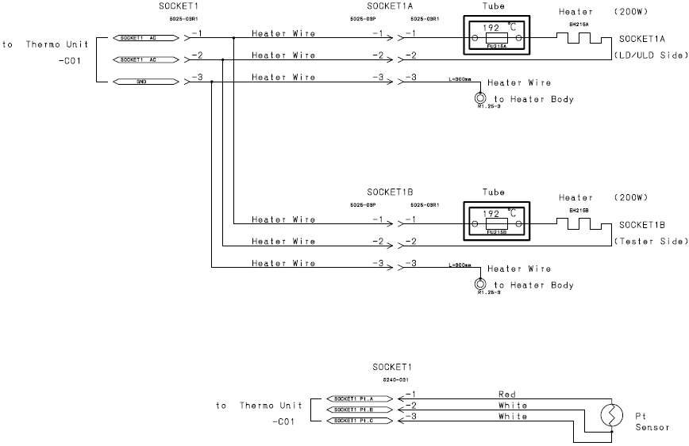

Service History
Subject: Xilinx Socket temperature fluctuate and Index Arm 2 automatically move upwards even pause button was pressed
Handler Model: NS-7080W
Controller: RC520
Date: 6~7 May 2009
Symptom
Handler NS7KW-06 socket temperature fluctuate.
Index arm 2 automatically move upwards even though pause button was pressed.
Action
a) Temperature check found socket temperature unable to heat up.
Resistance check at socket 1A and 1B connectors found open.
(By disconnecting connector 1A, measure resistance at pin 1 & 2 for the heater and thermofuse side.)
Required to change part on 7th May.
Further troubleshooting found that both socket thermal fuses blown.
Parts report and temperature check carried out.

b) After a few simulation on the index arm 2 issue, no implication found.
Cause